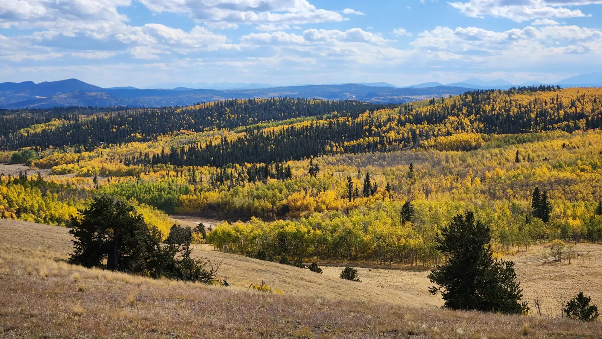

Wide Open
From the high ground near Kenosha Pass, South Park lies open below you, a basin so flat it looks ironed, with a long blue range along the far side and one road drawn straight across the grass. In Colorado, a “park” isn’t a lawn with picnic tables. It’s a huge, high mountain valley, and this is one of the biggest. (Yes, the cartoon borrowed its name from here.) On the first of October I spent the afternoon up there on my mountain bike, right as the aspens hit peak gold. The pass is famous for it.
I kept stopping, because the trail kept handing me another view. Hillsides were patched with gold between bands of dark spruce, and rocky outcrops stuck out of the forest under big drifting clouds. Down in the groves the trunks were bright white and the leaves so yellow they lit up the shade. Somewhere along the way I found a toppled tree, long dead, its roots flung into the air and weathered to copper and silver. I photographed it from every side, even with all that gold begging for attention!

Late in the day the light went warm, and even the groves along the highway glowed against the dark slopes. Peak color is a short window, and you can’t book it ahead. Exactly four weeks later, the road near Keystone ran through fresh snow, the spruce frosted white on both sides of the wet black pavement. The mountains had traded gold for white, and both look good on them.